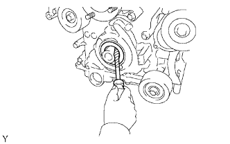

FRONT CRANKSHAFT OIL SEAL > REMOVAL |
| 1. REMOVE RADIATOR ASSEMBLY |
Remove the radiator (Click here).
| 2. REMOVE CRANKSHAFT PULLEY |
 |
Turn the crankshaft pulley, and align the notch with the timing mark "0" of the timing chain cover.
 |
Check that the timing marks of the camshaft timing gears and sprockets are aligned with the timing marks of the bearing caps as shown in the illustration.
 |
Using SST, hold the crankshaft pulley and loosen the pulley set bolt.
 |
Using the pulley set bolt and SST, remove the crankshaft pulley.
| 3. REMOVE FRONT CRANKSHAFT OIL SEAL |
 |
Using a screwdriver, pry out the oil seal.